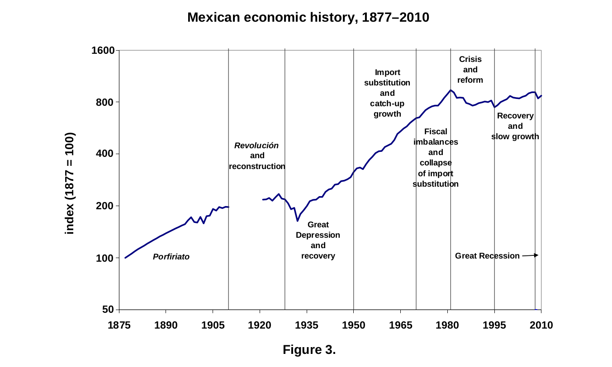
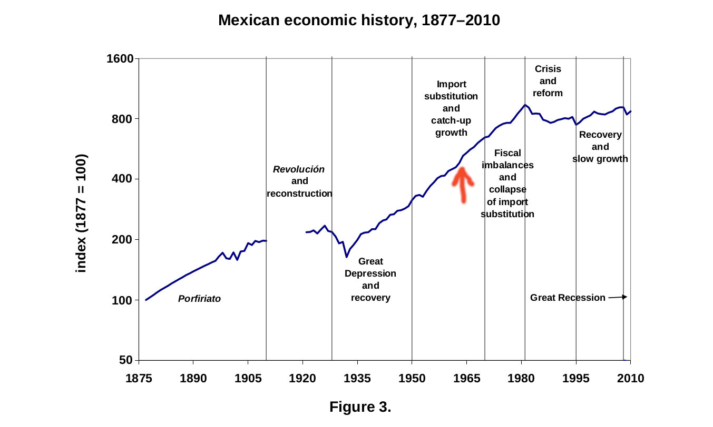
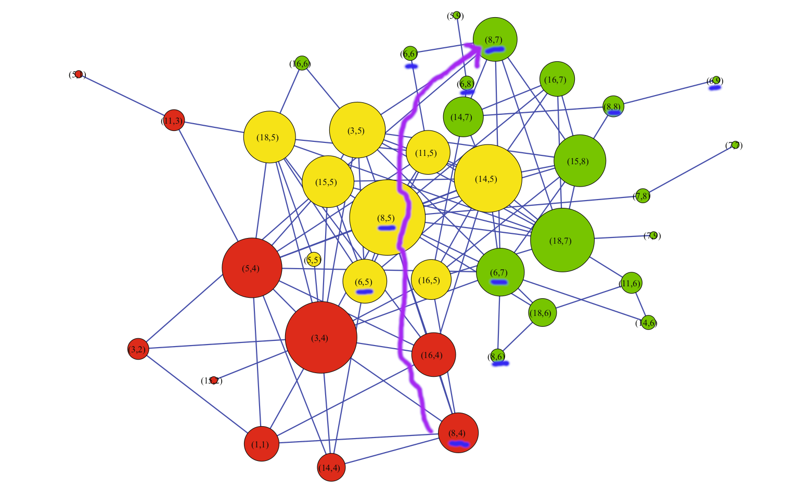

Redes complejas para un mundo complejo
IACC, Tijuana, Diciembre 2020
@jjmerelo, Universidad de Granada
(España) | Licencia: cc-by-sa
Él descubre para los lectores ese algo mexicano que se mueve como un fluido en la ciudad.
Paola Andrea Moreno, Ixca Cienfuegos y la ciudad
Red social: sistema complejo cuyos nodos son personas
Redes que reflejan la estructura narrativa y temática
Sacada de Social Network Analysis and the Scale of Modernist Fiction
La ciudad también es una red social
En una parte de la red compleja con un betweenness alto.
Una red que caracteriza a la ciudad
Y nos permite entenderla
Pero la eliminación de aristas provoca transiciones de fase
Aislando a las comunidades
Provocando una ruptura de la red
Sistemas aislados tienen diferentes comportamientos emergentes
O añadiéndolas
La conectividad elimina diferencias
Y la conexión elimina esas diferencias
Dame lana y te doy clase, dame clase y te doy lana
Ixca Cienfuegos, citado por Norma Larragoiti
México en el cambio de fase
El mero mero
Condensación de Bose-Einstein
Proceso de Bianconi-Barabási
Transición de fase a un estado de mínima energía
La conectividad hace que fluya la información

¿Quién es el centro ahora?

A NETWORK ANALYSIS OF THE 2010 FIFA WORLD CUP CHAMPION TEAM PLAY
COTTA Carlos · MORA Antonio M · MERELO Juan Julián · MERELO-MOLINA Cecilia
J Syst. Sci. Complex,(2013), 26: 21:42
Xavi Hernández como organizador del juego
Eje del juego 4-5-7
Con Iniesta de mi vida
Foto de PxFuel, partido contra Portugal
El fútbol es así
Con ayuda de los sistemas complejos, podemos entender por qué se ganó
Y por qué no vamos a ganar nunca más
La estructura de la red es clave para la comunicación
No siempre conduce a un estado óptimo
1918, gripe española
Una epidemia es un proceso de percolación
Epidemic spreading on complex networks with community structures
Stegehuis et al.